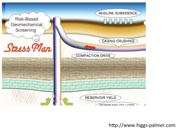

Next: 2.1.2.1 Onshore total vertical Up: 2.1 Lithostatic gradient Previous: 2.1.1 Stress concept and Contents
In a 3D porous solid with volume
 (Figure 2.2), equilibrium requires the summation of (vectorial) forces in all directions to be zero
(Figure 2.2), equilibrium requires the summation of (vectorial) forces in all directions to be zero
 .
Equilibrium of forces in the vertical direction (gravity
.
Equilibrium of forces in the vertical direction (gravity  direction) requires
direction) requires
 (forces in vertical direction).
Hence,
(forces in vertical direction).
Hence,
 |
(2.2) | ||
|  | (2.3) | ||
 |
(2.4) |
Considering infinitesimal variations yields
 |
(2.5) |
The term within the integral in the right-hand-side
 is called the vertical total stress gradient, or sometimes, simply as lithostatic stress gradient.
In a semi-infinite medium (e.g. approximation of the Earth's surface)
is called the vertical total stress gradient, or sometimes, simply as lithostatic stress gradient.
In a semi-infinite medium (e.g. approximation of the Earth's surface)
 .
.
If
 , then vertical stress
, then vertical stress  as a function of depth
as a function of depth  is
is
EXAMPLE 2.1:
Assume a rock made of 100% quartz (mass density
 ) and filled with water (mass density
) and filled with water (mass density  ).
What is the lithostaic stress gradient?
).
What is the lithostaic stress gradient?
SOLUTION
The bulk (volume average) rock mass density
 depends on porosity
depends on porosity  , volume fractions of mineral phases, and volume fractions of fluid phases.
For a water-saturated rock:
, volume fractions of mineral phases, and volume fractions of fluid phases.
For a water-saturated rock:
 |
 ,
,
 kg/m
kg/m and
and
 kg/m.
Then,
kg/m.
Then,
 kg/m kg/m kg/m kg/m kg/m kg/m |
and 19.4 ppg (pounds per gallon).
The stress gradient results
 kg/m kg/m m/s m/s Pa/m Pa/m MPa/km MPa/km |
A typical vertical stress gradient is  psi/ft
psi/ft  MPa/km for porosity
MPa/km for porosity
 .
Hydrostatic pore pressure gradient is
.
Hydrostatic pore pressure gradient is  psi/ft
psi/ft  MPa/km.
You may use fluid saturations
MPa/km.
You may use fluid saturations
 if the rock has two or more fluids in the pore space to accurately calculate the vertical stress gradient.
You may also use the corresponding mineral volume fractions if the rock is comprised of two or more minerals, e.g., a dolomite-rich shale.
if the rock has two or more fluids in the pore space to accurately calculate the vertical stress gradient.
You may also use the corresponding mineral volume fractions if the rock is comprised of two or more minerals, e.g., a dolomite-rich shale.
Now that we have the stress gradient, we can calculate total stress at a given depth. Let's consider two cases: onshore and offshore.
![\includegraphics[scale=0.40]{.././Figures/split/2-REVoverburden.pdf}](img57.svg)